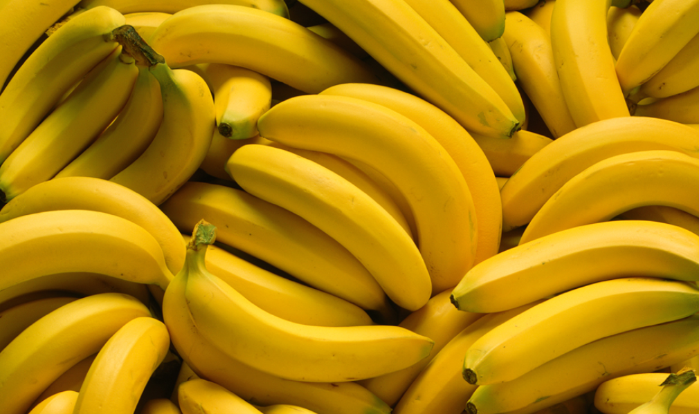

About Bananas
A banana is an elongated, edible fruit botanically a berry produced by several kinds of
large herbaceous flowering plants in the genus Musa In some countries, bananas used for
cooking may be called "plantains", distinguishing them from dessert bananas. The fruit is
variable in size, color, and firmness, but is usually elongated and curved, with soft flesh rich
in starch covered with a rind, which may be green, yellow, red, purple, or brown when ripe. The
fruits grow upward in clusters near the top of the plant. Almost all modern edible seedless
(parthenocarp) bananas come from two wild species Musa acuminata and Musa balbisiana. The
scientific names of most cultivated bananas are Musa acuminata, Musa balbisiana, and Musa
paradisiaca for the hybrid Musa acuminata M. balbisiana, depending on their genomic
constitution. The old scientific name for this hybrid, Musa sapientum, is no longer used.
Musa species are native to tropical Indomalaya and Australia, and are likely to have been first
domesticated in Papua New Guinea.They are grown in 135 countries,primarily for their
fruit, and to a lesser extent to make fiber, banana wine, and banana beer and as ornamental
plants. The world's largest producers of bananas in 2017 were India and China, which together
accounted for approximately 38% of total production.
Worldwide, there is no sharp distinction between "bananas" and "plantains". Especially in the
Americas and Europe, "banana" usually refers to soft, sweet, dessert bananas, particularly those
of the Cavendish group, which are the main exports from banana-growing countries. By contrast,
Musa cultivars with firmer, starchier fruit are called "plantains". In other regions, such as
Southeast Asia, many more kinds of banana are grown and eaten, so the binary distinction is not
as useful and is not made in local languages.
Condition to Banana grow :-
-
Type of soil require
Soil for banana should have good drainage, adequate fertility and moisture. Deep, rich loamy
soil with pH between 6-7.5 are most preferred for banana cultivation. Ill drained, poorly
aerated and nutritionally deficient soils are not suitable for banana. Saline solid,
calcareous soil are not suitable for Banana cultivation. Avoided soil of low laying areas,
very sandy & heavy black cotton with ill drainage.
A soil that is not too acidic & not too alkaline, rich in organic material with high
nitrogen content, adequate phosphorus level and plenty of potash are good for banana.
-
Climate
Banana is basically a tropical crop, grows well in temperature range of 13ºC – 38ºC with RH
regime of 75-85%. In India this crop is being cultivated in climate ranging from humid
tropical to dry mild subtropics through selection of appropriate varieties like Grandnaine.
Chilling injury occurs at temperatures below 12ºC. The normal growth of the banana begins at
18ºC, reaches optimum at 27ºC, then declines and comes to a halt at 38ºC. Higher temperature
causes sun scorching. High velocity wind which exceeds 80 km phrs damages the crop.
-
Irrigation
Banana, a water loving plant, requires a large quantity of water for maximum productivity.
But Banana roots are poor withdrawal of water. Therefore under Indian condition banana
production should be supported by an efficient irrigation system like drip irrigation.
Water requirement of banana has been worked out to be 2000mm per Annum. Application of drip
irrigation and mulching technology has reported improved water use efficiency. There is
saving of 56% of water and increasing yield by 23-32% under drip.
Irrigate the plants immediately after planting. Apply sufficient water and maintain field
capacity. Excess irrigation will lead to root zone congestion due to removal of air from
soil pores, thereby affecting plant establishment and growth. And hence drip method is must
for proper water management in Banana
-
Manuring & Fertilization
Banana requires high amount of nutrients, which are often supplied only in part by the soil.
Nutrient requirement has been worked out on all India basis is to be 20 kg FYM, 200gm N;
60-70gm P; 300gm K/plant. Banana requires heavy nutrition. Banana crop requires 7-8 Kg N,
0.7- 1.5 Kg P and 17-20 Kg K per metric tonne yield. Banana responds well to application of
nutrients. Traditionally farmers use more of urea and less of phosphorous and potash.
In order to avoid loss of nutrients from conventional fertilizers i.e. loss of N through
leaching, volatilization, evaporation and loss of P and K by fixation in the soil,
application of water soluble or liquid fertilizers through drip irrigation (fertigation) is
encouraged. A 25-30% increase in yield is observed using fertigation. Moreover, it saves
labour and time and the distribution of nutrients is uniform.